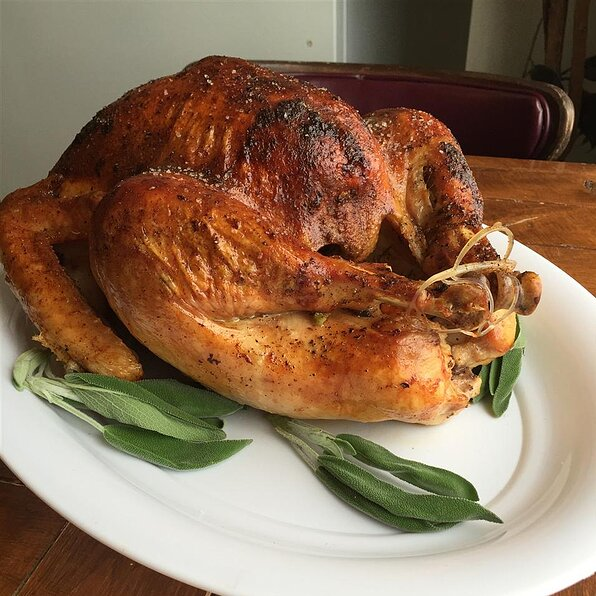

Turkey

Description
This is a recipe for roasted turkey and gravy. The key is to spread
butter under the skin of the turkey, which can be seasoned in whichever
way is preferable.
Ingredients
- 1 (12 pound) turkey
- 2 tablespoons salt
- 1 tablespoon black pepper
- 1 tablespoon poultry seasoning
- 2 onions
- 3 ribs celery
- 2 carrots
- 3 sprigs fresh rosemary
- 2 tablespoons turkey fat
- 1 tablespoon butter
Steps
- Preheat oven to 325 degrees F.
- Mix 2 tablespoons salt, 1 tablespoon pepper, and poultry seasoning and season cavity of turkey.
- Place 2 tablespoons butter under the skin and spread evenly.
- Place onion, celery, and carrots into roasting pan and place turkey on top.
- Roast the turkey in preheated oven about 3.5 hours until no longer pink.
- Remove turkey from oven and allow to rest in warm area 10 to 15 minutes before slicing.
- heat 2 tablespoons of turkey fat and 1 tablespoon of butter in saucepan over medium heat then cook and stir until gravy is thickened.